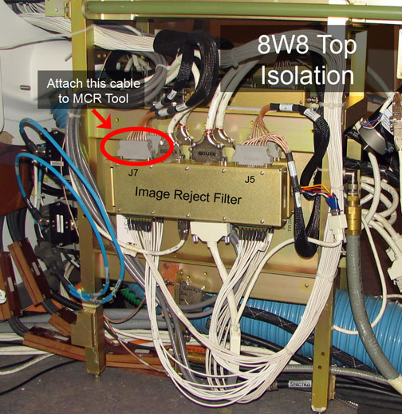

- 00000018WIA30268E20GYZ
- id_131073773.0
- Aug 29, 2019 1:41:50 AM
MCR III Tool
Prerequisites
| Required persons | Preliminary requirements | Procedure | Finalization |
|---|---|---|---|
| 1 | Not Applicable | 30 minutes | Not Applicable |
| Item | Quantity | Effectivity | Part number | Manufacturer |
|---|---|---|---|---|
| MCR III Tool | 1 | - |
5145298 5145299 | - |
| Coax to Coax receptacle (In the RF Kit) | 1 | - |
| - |
| ||||
| Condition | Reference | Effectivity |
|---|---|---|
|
System software is loaded and the system is capable of making images. | - | - |
|
The MCR tool helps isolate failures within the MCR chain. In order to rule out potential failures with the system cabinet or the 16-channel switch, , it is recommended that you begin by running the 16-channel switch diag and the syscab loopback test diag prior to running the MCR tool. | - | - |
About this task
The Multicoil Receive Chain Tool provides a means of diagnosing problems in Multicoil Receive (MCR) chain hardware, without use of coils. The tool sends signals down the individual paths to isolate specific channels in the receive chain. The tool’s Graphical User Interface (GUI) guides the user through the various steps involved in running the tool and troubleshooting the problem. The GUI has built-in instructions and detailed setup instructions, troubleshooting flowcharts and documents that will help facilitate rapid diagnosis of the problem. There are three levels of tests that can be run using the MCR III tool: Default, Port-specific, and Individual. Once you've decided to use MCR III tool, determine which level of test your situation requires. The default and port-specific levels of tests offer increased user-friendly automation that is been omitted from the individual tests by design. Therefore, it is imperative to identify which level of tests you need to perform and then follow the instructions for that specific level.
-
Default Tests
-
This test must be passed during the MR installation.
-
In most scenarios, this is the first test that should be run when using the MCR tool.
-
If this test fails, port-specific tests can be run to further isolate the failing component.
-
For detailed information on performing the default tests see Performing Default MCR III Tests.
-
-
Port-specific Tests
-
These tests are designed to run after the default test indicates a failure. The B Port and C Port tests provide more comprehensive testing of those ports than the diagnostics performed by the default test.
-
For detailed information on performing the port-specific tests see Port-specific Tests
-
-
Individual Tests
-
These tests are provided to verify previous test results of a component in the MCR chain.
-
For detailed information on performing the individual tests see Individual Tests
-
Hardware Overview
Procedure
Accessing the MCR III Diagnostic Tests
Procedure
Performing Default MCR III Tests
About this task
The default level of tests contains three (3) individual tests (four (4) in 32-channel systems). These tests are identified on the MCR Tool GUI by with an asterisk (see Figure 5) . Note: To run the default level tests you only need to connect the MCR III tool to the LPCA front connector.
Procedure
- The MCR tool will complete the tests (marked with an asterisk (*)) in
alphabetical order. Once it completes the A port tests a User Query will appear
asking you disconnect the MCR tool from the A port and connect to the B port
(see Figure 6. Once you make
this change click Done.
Figure 6. Connect B Port 
A similar query will appear in 32-channel systems once the B port has been tested. At this point disconnect the MCR tool from the B port and connect it to the C port as instructed and click Done. If the tool is not detected after clicking Done, then a User Query will appear indicated that it was not detected (see Figure 7).
Figure 7. Tool Not Detected 
Port-specific Tests
About this task
The port-specific tests will automatically run all the individual tests available in that port. Between each test you will be prompted to change the positions of cables that run from the 16-channel switch to the Service Hub. Make changes as instructed. After each test you will have the option to skip the remaining tests.
Procedure
- Select the group of tests you want to run, and then click Run.

- With preamps OFF (Port A).
- With preamps ON (Port A).
-
Hypertronics Test (Ports B & C). This test
diagnoses the MCR chain path of channels 1-8 (or 17-24 on Port C) between
the Coil and the 16-channel switch.
Figure 9. Hypertronics Test 
Clicking Run will start this test. All cables should remain in their original locations. Once this test is complete, you will automatically proceed to the Hypertronics Cable Swap test. Note the results, make the cable changes as instructed, and proceed.
Note:If this test passes, the MCR III Tool will automatically skip the 8W8 Bottom test.
-
Hypertronics Cable Swap Test (Ports B & C).
This test diagnoses the MCR chain path of channels 1-8 (17-24 on Port C) between
the Coil and the Service Hub and channels 9-16 (25-32 on Port C) between the
Service Hub and the 16-channel switch.Note:
This test will not run on 8 channel systems.
Figure 10. Hypertronics Cable Swap Test 
Once the system is ready to perform this test, you will be asked to swap the two lower cables on the Service Hub (see Figure 11). Once this test is complete, you may automatically proceed to the 8W8 Bottom test. Note the results, make the cable changes as instructed, and proceed.
Figure 11. Location of Cable Swapping  Note:
Note:If this test passes, the MCR III Tool will automatically skip the 8W8 Top test.
-
8W8 Bottom Test (Ports B & C). This test
diagnoses the MCR chain path of channels 1-8 (17-24 on Port C) from the Service
Hub cable onward to the 16-channel switch.
Figure 12. 8W8 Bottom Test 
Once the system is ready to perform this test, you will be asked to take the bottom 8-channel connector off the Service Hub and connect it directly to the MCR tool. See Figure 13. Once this test is complete, you may automatically proceed to the 8W8 Top test. Note the results, make the cable changes as instructed, and proceed.
Figure 13. MCR Tool Connect Location for 8W8 Bottom 
-
8W8 Top Test (Ports B & C). This test diagnosis
the MCR chain path of channels 9-16 (25-32 on Port C) from the Service Hub
cable onward to the 16-channel switch.
Figure 14. 8W8 Top Test 
To perform this test, take the top 8-channel connector off the Service Hub and connect it to the MCR tool. See Figure 15. Once this test is complete, note the results and install the cables to their original position.
Figure 15. MCR Tool Connect Location for 8W8 Top 
Individual Tests
About this task
The individual tests are primarily designed to allow field engineers to hammer a specific portion of the MCR chain.
Procedure
- Connect the MCR tool to the port you wish to test (see Figure 3).
- Select the individual test you want to run.
- Hypertronics Test. All cables should remain in their original locations and the MCR tool must be connected directly to the port being tested (see Figure 3
- Hypertronics Cable Swap Test. To perform this test, you must connect the MCR tool directly to the port being tested. Then swap the two lower cables on the Service Hub. See Figure 10.
-
8W8 Bottom Test. To perform this test, take the
bottom 8-channel connector off the Service Hub and connect it to the MCR tool
(see Figure 12). If a failure
occurs, re-run the test with the tool connected on the output side of the
Image Reject Filter as diagramed below (see Figure 17).
Figure 16. 8W8 Bottom Test - Testing aa Path 
Figure 17. 8W8 Bottom Isolation Cable Location 
-
8W8 Top Test. To perform this test, take the
top 8-channel connector off the Service Hub and connect it to the MCR tool
(see Figure 14). If a failure
occurs, re-run the test with the tool connected on the output side of the
Image Reject Filter as diagramed below (see Figure 18).
Figure 18. 8W8 Top Test - Testing bbPath 
Figure 19. 8W8 Top Isolation Cable Location 
- If the MCR tool reports a failure (designated by red text in the results, for example, Figure 8), see MCR III Chain Tool Troubleshootingfor troubleshooting.
What to do next
Finalization
No finalization steps.